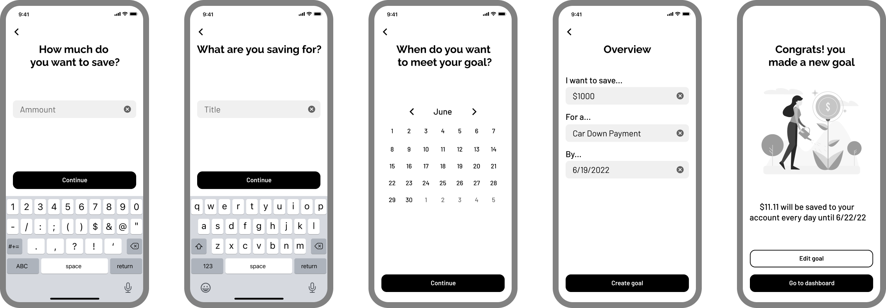
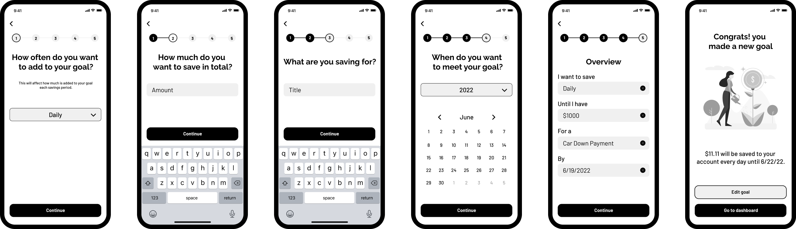

UX/UI Case Study: Proseeds
Money Saving Application
Project Overview
This project was a short design sprint over the course of a few weeks. The objective of this project was to design a responsive app to help users save money. The tool needed to display data on the user’s finances and help them set goals in order to save money in a certain amount of time.
Role
UX/UI Designer
Tools Used
Figma, Adobe Illustrator
User Stories and User Flow
The project brief included prior research with user stories. A user flow diagram was developed based on the three user stories below.
- As a user, I want to receive a personalized savings plan, so that I can save enough money to reach my goal in time.
- As a user, I want to see my finances laid out clearly and visually, so that I can see how much I am spending at a glance.
- As a user, I want to be able to change my saving goals and deadlines.
Low Fidelity
Low fidelity frames were created based off of the user stories and user flow. These frames include the basic user interface elements of the application with minimal styling.
Mid Fidelity and User Testing
Styling was added to the low fidelity screens. The screens for creating a new savings goal were incorperated into a working prototype for user testing. The protoype was tested on three participants.
Key Take-Aways
- Users wanted to customize how often they added to their goal
- Users wanted numbered steps to know where they were in the process
- Users wanted a year option for long term goals
Before
After
Style Guide
A style guide was created to apply to the mid fidelity frames.
Logo
The logo consists of simple shapes that evoke the simplicity of the application itself. It depicts a tree sprouting from a coin (or seed) symbolizing how a small amount of saving can grow into something much larger.
Color Palette
Green and gold were used for their connection with wealth. Blue was chosen for its sense of reliability.
Typography
Raleway Black and Barlow Medium were chosen for easy readability.
Final Design: Login and Sign Up
The login and sign up process was designed to be as straightforward as possible. A simple step by step process with minimal input fields on each screen. The call to action buttons are clearly visible and accessible with a keyboard pop-up.
Final Design: Dashboard
Goals are displayed at the top of the dashboard. Users can see how much money they have saved so far and how many days are left.
A monthly report of the users finances is shown in a simple visual format. Users can see how much money they made, how much they spent, and how much has been saved towards their goals.
A list of recent transactions helps users keep track of their spending habits.
At the bottom of the dashboard users can keep track of how much is left in their bank account.
Final Design: Creating a Savings Goal
Like the rest of the app, the process for creating a goal was designed with simplicity in mind. The process requires one piece of input per screen with an overview at the end. A progress bar at the top of the screen lets users know where they are in the process..